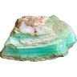

Mineral Grimoire

ChrysopraseAppearance
Apple-green variety of chalcedony, translucent to opaque with vitreous luster.
Origin
Australia, Brazil, India, Kazakhstan, Zimbabwe.
Attributes
Chrysoprase is a cheering stone that lifts the emotions and promotes optimism. It encourages acceptance of oneself and others and helps release judgmental attitudes.
Healing
Chrysoprase strengthens the eyes, staunches blood, and relieves the pain of rheumatism.
Position
Wear as jewelry or place as appropriate.
Spellworking
Chrysoprase, an apple-green form of chalcedony, is worn to lift the emotions and to banish greed, envy, selfishness, tension, and stress. It is a cheering stone when worn and is also used to prevent nightmares.
Luck and Success
A lucky stone, chrysoprase is worn for eloquence, success in new undertakings, and to attract friends.
Protection
As a magical amulet of protection, in the thirteenth century the chrysoprase was engraved with the image of a bull and worn. Today, it is utilized as a general shield against negativity.
Healing
Chrysoprase's healing powers include strengthening the eyes, staunching blood, and relieving the pain of rheumatism.
Money
To attract money, carry a small piece with you at all times.
Magickal Properties
Chrysoprasethe most prized stone within the chalcedony familyhas been worked into seals, signets, and jewelry since the time of ancient Egypt, Greece, and Rome. Known in those traditions as the stone of Venus, its name traces to the Greek chryssoprason, meaning golden leek, a reference to its characteristic yellow-green color produced by traces of nickel. It carries the energy of the Green Ray, broadcasting harmony, balance, and abundance into whatever field it enters.
Chrysopraseoperates along the full emotional spectrum of the heart. For the beginner, it offers gentle but effective assistance with relational repair and readiness. It eases the emotional residue left by painful endings, creates spaciousness in the heart for new connection, and instills a quiet, reliable sense of one's own worth. For the advanced practitioner, it becomes a more demanding tool: one willing to illuminate the full depth of the shadow and support the integration of what is found there. It works against feelings of isolation and dissociation, restoring a sense of belonging to the collective and softening the distortions of inferiority and superiority alike. It supports multi-generational healing work, helping to identify and interrupt inherited patterns of trauma, abuse, and relational dysfunction, and to understand the karmic origins of these cycles across lifetimes.
Chakra Work
Chrysopraseanchors primarily in the Heart Chakra, where it keeps attention compassionate and truthful across all interactions. From this position, it extends a connection to the nurturing energies of earth-based spirit traditions, including the Mother Goddess, the Fae, and nature devas, aligning the practitioner with healing intelligence that extends outward to the environment. On the Solar Plexus, chrysoprase reinforces willpower and a felt sense of personal sovereignty. Placing it on both chakras simultaneously bridges these two centers, unifying emotional desire with personal resolve and building the motivation and self-belief needed to take action toward meaningful goals.
Did You Know?
Alexander the Great reportedly wore a chrysoprase stone in his belt during his military campaigns, crediting it as a source of his long streak of battlefield success.